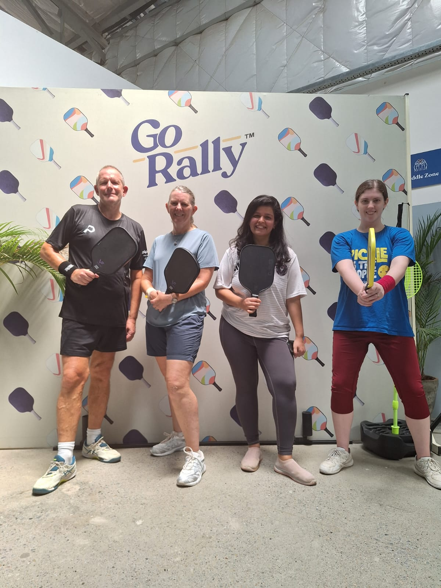

Bengaluru is one of India's fastest-growing pickleball cities, and it shows — dedicated indoor centres, chains with multiple locations, and a genuinely active scene across the city. We played at Go Rally on Old Airport Road, one of five facilities the operator now runs across Bengaluru.

Go Rally is a fast-growing Indian pickleball chain, and this Old Airport Road location is one of five it now runs across Bengaluru — six indoor courts at Exit Road, No 52 MSIL Building, near Blue Dart. Open daily from 6am.
Our take: a solid, well-run indoor setup and an easy one to book into as a visitor, even if the scene here felt less competitive than some of the bigger dedicated centres we've played at elsewhere.
| Court quality | ★★★★☆ |
| Quality of games | ★★★☆☆ |
| Ease of joining | ★★★★☆ |
| Competitive level | ★★★☆☆ |
| Value | ★★★★★ |
| Wanderers rating | 8/10 |
Would we go back? Yes — Go Rally makes it easy to find a game in a city with a lot of pickleball options, and with five locations across Bengaluru, there's likely one close to wherever you're staying.
Six concrete courts split evenly between indoor and outdoor, just off Sarjapur Main Road in HSR Layout. Pay-per-play with paddles and balls available to rent, plus food and drinks on-site — a popular, sociable option in one of Bengaluru's busiest tech-hub neighbourhoods.
Five dedicated outdoor courts at NICE Junction on Bannerghatta Road, with lights, locker rooms and coaching available — Game Theory also runs a newer championship-grade indoor location on Sarjapur Road, so worth checking which is closer before you book.
Six indoor courts near Sarjapur Road with a pro shop and locker rooms — a members-only club rather than a drop-in venue, so worth reaching out ahead if you want to arrange a game as a visitor.
Go Rally and Game Theory both run multiple centres across the city — check which location is nearest before booking, since Bengaluru traffic can make cross-town games a slog.
Venues like PaddleX require membership rather than casual drop-in — reach out in advance if you want to arrange a visitor game there.
Session times vary a lot between venues and locations across the city — worth a quick check on the day, especially for early-morning or late-evening games.